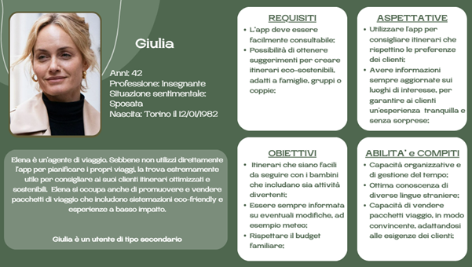

Problema
Il turismo di massa congestiona i luoghi, peggiora l’esperienza e impatta su comunità e ambiente.
- Sovraffollamento e code
- Info frammentate su trasporti/alloggi “green”
- Interfacce poco accessibili
Un’app che pianifica itinerari dinamici evitando aree affollate, suggerisce scelte eco-friendly e premia con eco-punti chi adotta comportamenti virtuosi. L’obiettivo: ridurre l’overtourism e migliorare l’esperienza.
Il turismo di massa congestiona i luoghi, peggiora l’esperienza e impatta su comunità e ambiente.
Le persone vogliono viaggi fluidi e autentici, con indicazioni chiare per evitare stress e luoghi saturi.
Ridurre attriti + suggerire alternative locali.
Una “guida turistica verde” che adatta il percorso in base a meteo e afflusso, premia scelte sostenibili e integra info utili in un’unica app.
Test di app esistenti, raccolta recensioni e questionario per capire priorità, attriti e aspettative dei viaggiatori.
Metafora “Guida Turistica Verde” + user flow dei percorsi: dalla ricerca alla modifica in tempo reale.
Wireframe delle viste principali: Home, Ricerca, Viaggio, Account, Notifiche, Modifica itinerario.
Estratti dal wireframe: mappa con trasporti verdi, ricerca con vincoli, viaggio con affollamento stimato e suggerimenti alternativi.
Destinazione, date, budget, preferenze (es. “evita aree affollate”).
L’app crea l’itinerario ottimizzato integrando trasporti e tappe locali.
Notifiche su meteo/afflusso propongono alternative intelligenti.
Eco-punti per scelte sostenibili, convertibili in piccoli vantaggi.